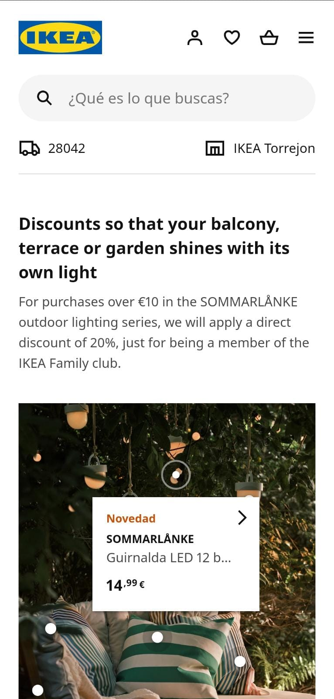

Visual Hierarchy
Football Manager
I think this screenshot is following the rules of visual Hierarchy, because once you get there it is easy to know what is important to do on this side of the web page and where you have to go, the use colors and font size to do this kind of visual, also they have they main product in first place and the rest is following as you scroll down.
White Space and Clean Design
Ikea
Ikea web site looks always very clean and simply and it is they work really well with the space between graphics, margins, columns, lines, or visuals. It also helps a lot to read the page and to know what to do and where to go. For me, this site does really good work with one of the most an important element of web design.
Repetition
football manager
I really wanted to find an example for this element and it was not easy but going back to the first website, you can see how they use Repetition in a wise way either to sell or make you remember the brand, they repeat football manager or FM which means the same, as you can see up in the middle and down in a little message.